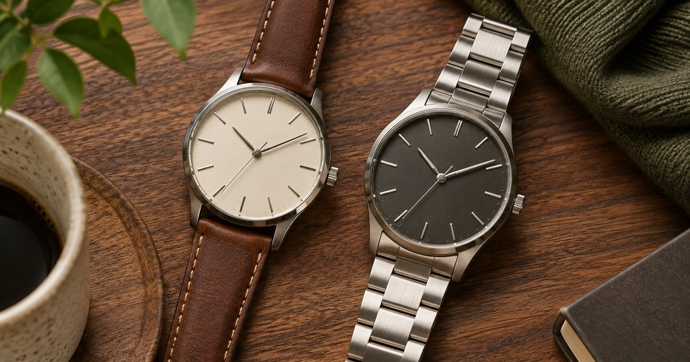
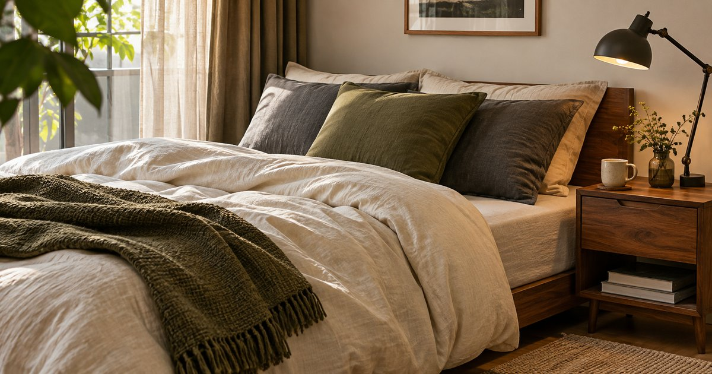

長く使えるものの選び方
安さだけで選ばず、長く使えるものを選ぶと結果的に買い替えが減ります。素材や手入れの記事をまとめました。
 アパレル
アパレルお気に入りの服を長持ちさせる。洗濯と収納の基本ルール
服がすぐヨレる・縮む原因の多くは洗い方と収納にあります。今日からできる洗濯と収納のコツを紹介します。
 アパレル
アパレル冬アウターの選び方。ダウン・ウール・中綿の違いと向いている人
冬の主役になるアウター。ダウン・ウールコート・中綿ジャケットそれぞれの特徴と、生活スタイル別の選び方を解説します。
 アパレル
アパレルニットの選び方。ウール・カシミヤ・コットン・アクリルの違い
冬の定番ニットは素材で暖かさも見た目も変わります。代表的な4つの素材の特徴と、首元の形の選び方をまとめました。
 アパレル
アパレル初めての革靴の選び方。デザイン・色・素材の基本
スーツにも休日にも使える1足目の革靴の選び方。代表的なデザインの違いと、サイズ選びの注意点をまとめました。

アパレル腕時計の選び方。ムーブメント・ケースサイズ・ベルトの基本
腕時計は小さくても印象を左右するアイテム。初めての1本を選ぶときに知っておきたい基本をまとめました。

インテリア寝具を見直そう。マットレス・枕・掛け布団の選び方の基本
毎日使う寝具は、部屋づくりの中でも見直す価値の高いアイテム。マットレス・枕・掛け布団を選ぶときの基本的な考え方をまとめました。